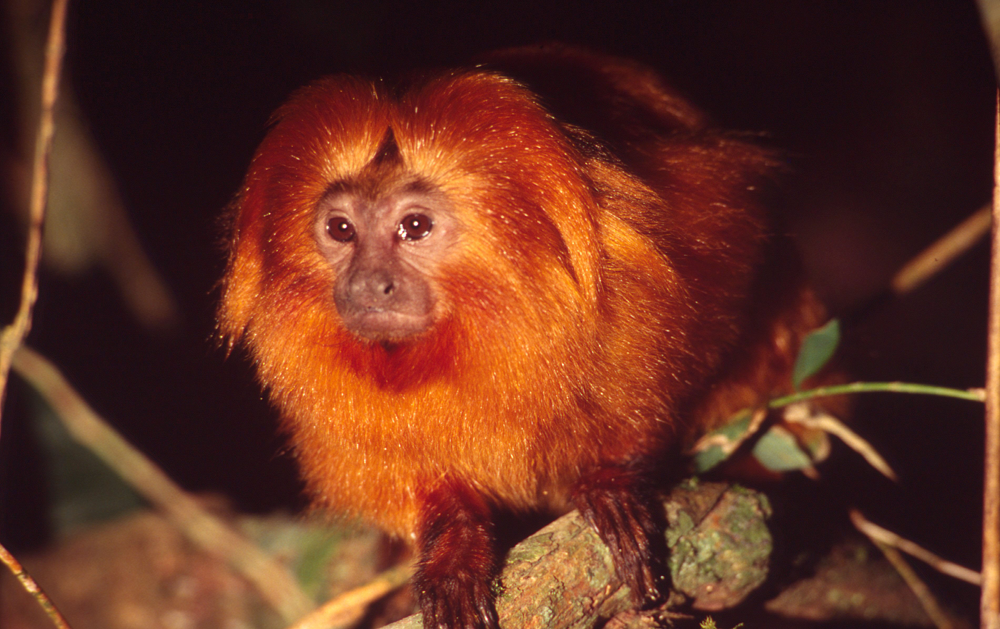
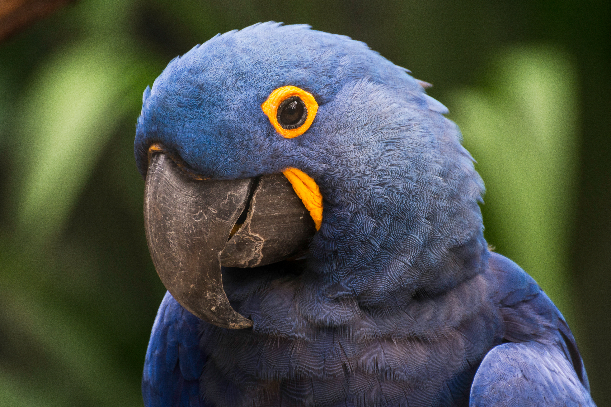
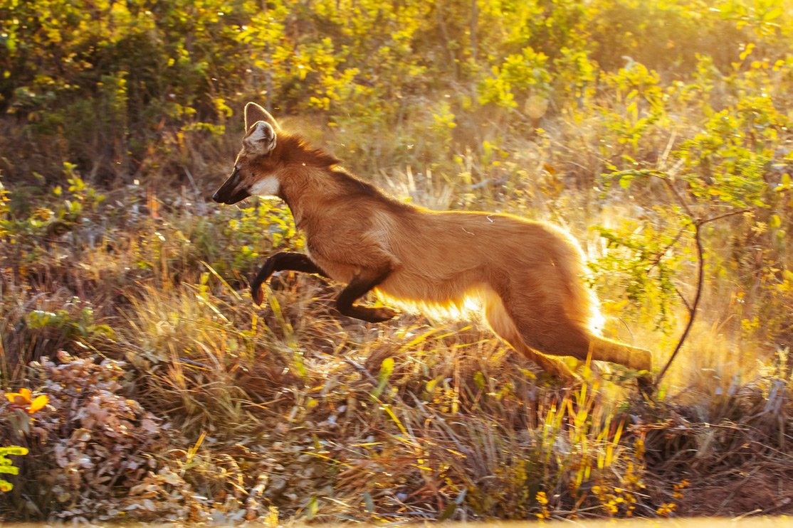
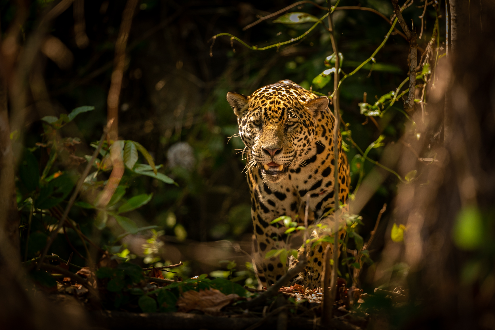

ESPÉCIES AVALIADAS15.974
Fauna avaliada pelo processo nacional do ICMBio.
Entenda a situação da biodiversidade brasileira através dos dados.
Explorar os dadosFauna avaliada pelo processo nacional do ICMBio.
Espécies nas categorias VU, EN ou CR da lista nacional.
Espécies na categoria Criticamente em Perigo (CR).
Biomas com espécies ameaçadas registradas no SALVE.
Os gráficos usam a lista nacional vigente. Como uma espécie pode ocorrer em mais de um bioma, a distribuição a atribui a apenas um, seguindo a ordem da lista.
Esta lista contém espécies ameaçadas; LC e NT não fazem parte deste conjunto.
Cada espécie é contada uma única vez, no primeiro bioma disponível nesta ordem: Amazônia, Cerrado, Mata Atlântica, Caatinga, Pantanal e Pampa. Espécies apenas costeiro-marinhas ou sem bioma continental ficam na categoria separada; o total é 1.383.
Mostra o ano da avaliação das espécies que constam na lista atual — não é uma série histórica do total de espécies ameaçadas.
Selecione uma região para filtrar o painel.

A distribuição atribui cada espécie a um único bioma pela ordem indicada no gráfico acima. A categoria costeiro-marinha / sem bioma continental aparece apenas no gráfico, não no mapa.
Fonte oficial: SALVE — Sistema de Avaliação do Risco de Extinção da Biodiversidade (ICMBio). A busca de espécies e os indicadores de categorias deste painel consultam a lista pública do SALVE e são sincronizados a cada 24 horas enquanto o dashboard estiver aberto, ou ao reabri-lo. Também é possível consultar manualmente pelo botão de atualização. A consulta é feita neste navegador; o histórico de mudanças fica salvo localmente. Os filtros detalhados por grupo, UF e período ainda usam a base local do painel. A listagem resumida não contém todos os dados ecológicos: consulte a ficha SALVE vinculada a cada espécie.
Participação aproximada de cada bioma na área do Brasil, conforme a delimitação territorial do IBGE.
Áreas e percentuais aproximados com base na publicação de 2019 Biomas e Sistema Costeiro-Marinho do Brasil — IBGE.
Estas quatro espécies ficam em destaque. Pesquise a lista oficial de espécies ameaçadas do SALVE/ICMBio pelo nome popular ou científico; a base é atualizada periodicamente.
A lista será conferida automaticamente.

01
02
03
04Nenhuma espécie desta seleção está em destaque no painel. Ajuste os filtros ou consulte o mostruário completo.
As ameaças variam por espécie e território. Estes fatores aparecem em avaliações e planos de ação de conservação — não são uma classificação única para toda a fauna.
Conversão e ocupação do território reduzem áreas de vida e isolam populações.
Incêndios e alterações ambientais podem destruir abrigo, alimento e locais de reprodução.
A retirada de animais da natureza pressiona populações e desequilibra ecossistemas.
Estradas, expansão urbana e conflitos com atividades humanas aumentam riscos para a fauna.
Referências para avaliação de ameaças: Planos de Ação Nacional para a Conservação das Espécies Ameaçadas (ICMBio) e Classificação de ameaças da IUCN.
Consulte a lista nacional vigente do ICMBio / MMA e as fichas globais da IUCN Red List. Consulte as fichas para detalhes e datas de cada avaliação.